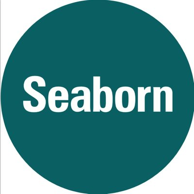
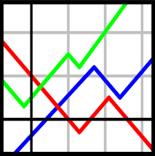

Rahul Kashyap
Junior data scientist with 5+ years of experience (including graduate training) in data analysis, machine learning and computational science. Versatile problem solver with excellent communication skills. Expertise in programming, applied mathematics, model building using data and critical thinking to provide insights. Results from data analysis as well as open source code published in peer reviewed journals.
Skills
-

-

-

-

-

- 
- 
-

-

-

-


- Floating Point Arithmetic
- Root-Finding and Optimization
- Linear Algebra
- Differential Equations
- Spectral Methods
Experience
Lecturer
Course instructor for Scientific computing using Python (Spring 2018, Fall 2018), Numerical Analysis using Python (Fall 2018), Differential Equations using Python (Spring 2019).
Lecturer
Course instructor for Mechanics and Vibrations course for Engineering students (calculus based).
Projects
Development of PULSEDYN software
- Full life-cycle development of PULSEDYN – modular and scaleable C++ software for simulation of strongly nonlinear lattices. PULSEDYN is available to the scientific community under GPLv3 license. Accepted for publication in journal Computer Physics Communications 2019.
- Estimated time savings of approximately 4 months per scientific group involved in research. Currently used as teaching tool in graduate courses at SUNY at Buffalo.
Data analysis for PULSEDYN simulations
- Built statistical description for persistent energy fluctuations in physical systems. Modeled evolution of physical systems to an equilibrium like state with ensemble based statistical description. Analysis of large scale data generated from PULSEDYN simulations using Python, MATLAB, C and C++.
- Techniques involve time-series analysis, linear algebra based methods, statistics and regressions.
- Published in journal International Journal of Modern Physics B.
- Submitted to journal Physical Review E 2018.
Data science and machine learning
- Cat image classification using deep neural networks.
- Classification of hand signs using deep neural networks in Tensorflow.
- Style transfer using pre-trained VGG network in Tensorflow.
- Face verification using FaceNet in Tensorflow.
- Classification of tumors using breast cancer dataset – comparison of popular machine learning algorithms.
- SPARCS hospital patient data analysis.
- Chicago bus travel update app.
Data Analysis of Evolutionary Network Simulations
- Modeling and code development for industrial network complexes utilizing graph theory and AI based methods (genetic algorithms). Code development in MATLAB and Python. Techniques used include graph theory, artificial intelligence, network analysis and statistical methods.
- Published in journal Sustainability in 2017.
Data Analysis of Large Scale Simulations of Glasses
- Large scale parallel simulations of glass nanoparticle collisions to study energy trapping in nanoparticles.
- Data analysis and visualization using VMD, Ovito, LAMMPS, Python and MATLAB. Techniques involve statistics, regressions and Monte-Carlo methods.
Pattern Formation and Artificial Intelligence
- Code development and mathematical modeling of pattern formation in chemical reactions. Language used MATLAB. Techniques used involve differential equations, linear algebra, eigenvalue problems, etc.
- Developed MATLAB code implementing swarming based AI techniques for parameter extraction and model optimization of experimental data in transistor devices. Techniques used are artificial intelligence, regressions, optimization.
Education
State University of New York at Buffalo (SUNY), Buffalo, NY
University of Hyderabad, Hyderabad, India
Interests
Physics, technology, basketball, video games
Awards
- United University Professions Professional Excellence Award (by external nomination) - December 2018
- Outstanding teaching assistant - August 2018